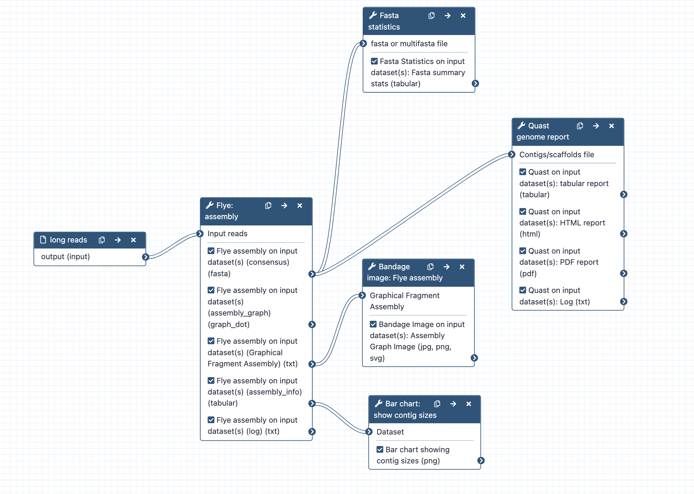

Assembly with Flye; can run alone or as part of a combined workflow for large genome assembly. * What it does: Assembles long reads with the tool Flye * Inputs: long reads (may be raw, or filtered, and/or corrected); fastq.gz format * Outputs: Flye assembly fasta; Fasta stats on assembly.fasta; Assembly graph image from Bandage; Bar chart of contig sizes; Quast reports of genome assembly * Tools used: Flye, Fasta statistics, Bandage, Bar chart, Quast * Input parameters: None required, but recommend setting assembly mode to match input sequence type Workflow steps: * Long reads are assembled with Flye, using default tool settings. Note: the default setting for read type ("mode") is nanopore raw. Change this at runtime if required. * Statistics are computed from the assembly.fasta file output, using Fasta Statistics and Quast (is genome large: Yes; distinguish contigs with more that 50% unaligned bases: no) * The graphical fragment assembly file is visualized with the tool Bandage. * Assembly information sent to bar chart to visualize contig sizes Options * See other Flye options. * Use a different assembler (in a different workflow). * Bandage image options - change size (max size is 32767), labels - add (e.g. node lengths). You can also install Bandage on your own computer and donwload the "graphical fragment assembly" file to view in greater detail. Infrastructure_deployment_metadata: Galaxy Australia (Galaxy)
{kind=link}